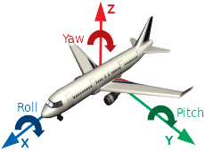

- There are many forms to represent orientation in 3D space. Matrices, Euler angles and quaternions. In this API, most computations are done with matrices. Euler Angles is simply a set of roll, pitch and yaw. It represents 3 successive rotations in 3 axes and the order may be different. Compared with other representations, this is much easier to visualize and less difficult to learn for most people. Many 3D modeling softwares implement this representation.

- Matrices are mainly used in the back-end and Euler angles in the front-end. So, it is necessary that the conversions between these two forms is to be researched.
- For the sequence of rotations, the order is taken as yaw, pitch and roll.
\[ R = R_z(\phi)R_y(\theta)R_x(\psi) \]
\[ R = \begin{pmatrix} \cos\theta \cos\phi & \sin\psi\sin\theta\cos\phi-\cos\psi\sin\phi & \cos\psi\sin\theta\sin\phi+\sin\psi\sin\phi \\ \cos\theta\sin\phi & \sin\psi\sin\theta\sin\phi-\cos\psi\sin\phi & \cos\psi\sin\theta\sin\phi-\sin\psi\cos\phi \\ -\sin\theta & \sin\psi\cos\theta & \cos\psi\cos\theta \end{pmatrix} \]
Finding \(\boldsymbol{\theta}\)
- Starting with \(\boldsymbol{R_{20}}\), it is found that
\[ R_{20} = -\sin\theta \]
\[ \theta = \sin^{-1}(-R_{20}) \]
Finding \(\boldsymbol{\psi}\)
- For \(\boldsymbol{\cos\theta \ne 0}\),
\[ {R_{11}\over R_{22}}={\sin\psi\cos\theta \over \cos\psi\cos\theta} \]
\[ \psi = \tan^{-1}({R_{21} \over R_{22}}) \]
- To compute the above equation using \(\mathbf{atan2}\) function, it is observed that the sign of each parameter is important for determining the quadrant. So, to obtain the correct quadrant of \(\boldsymbol{\psi}\), the sign affected by \(\boldsymbol{\cos\theta}\) is removed as follow.
\[ \psi = \mathrm{atan2}({R_{21} \over \cos\theta},{R_{22} \over \cos\theta}) \]
Finding \(\boldsymbol{\phi}\)
- With similar approach in previous step, at \(\boldsymbol{R_{00}}\) and \(\boldsymbol{R_{10}}\),
\[ \phi = \mathrm{atan2}({R_{10} \over \cos\theta},{R_{00} \over \cos\theta}) \]
What If Gimbal Lock?
- Gimbal Lock is the state where the Euler rotations lose one degree of freedom. When the second order rotation takes a 90 degree rotation, the third rotation axis becomes identical to the previous first rotation axis.
- Since \(\boldsymbol{\cos\theta = 0}\), the above equations don't work and another approach is to be observed.
If \(\boldsymbol{\theta = {\pi \over 2}}\)
- Substituting \(\boldsymbol{\sin\theta = 1}\) in \(\boldsymbol{R_{01}}\), \(\boldsymbol{R_{02}}\) and applying angle sum and difference trigonometric identity,
\[ R_{01} = \sin\psi\cos\phi-\cos\psi\sin\phi = -\sin(\phi-\psi) \]
\[ R_{02} = \cos\psi\cos\phi+\sin\psi\sin\phi = \cos(\phi-\psi) \]
- In Gimbal Lock, both yaw and roll are rotating at the same axis and one of them can be any value. Here, \(\boldsymbol{\psi}\) is taken zero.
\[ \phi = \mathrm{atan2}(-R_{01}, R_{02}) \]
If \(\boldsymbol{\theta = -{\pi \over 2}}\)
- Similar approach to previous case with \(\boldsymbol{\sin\theta = -1}\),
\[ R_{01} = -\sin\psi\cos\phi-\cos\psi\sin\phi = -\sin(\phi+\psi) \]
\[ R_{02} = -\cos\psi\cos\phi+\sin\psi\sin\phi = -\cos(\phi+\psi) \]
\[ \phi = \mathrm{atan2}(-R_{01}, -R_{02}) \]
Next: Lighting Model
 1.8.13
1.8.13